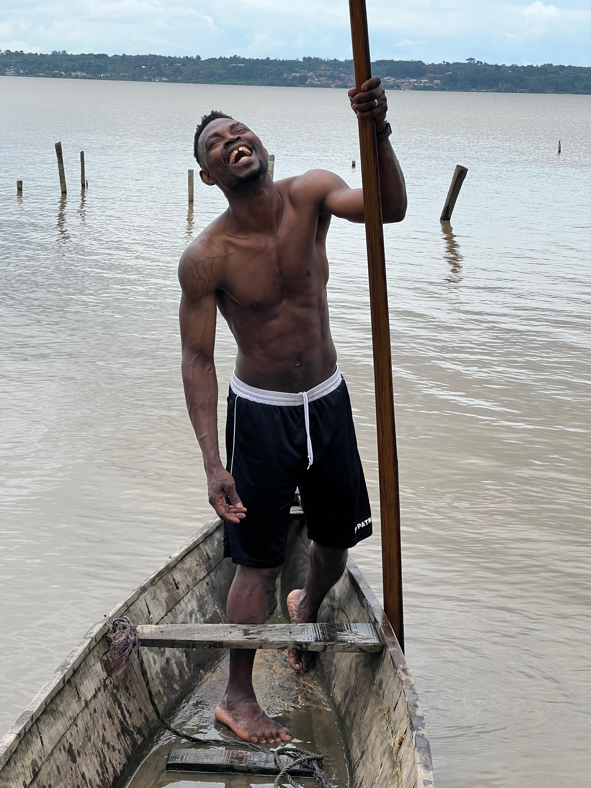

A living town on the shores of Lake Ahémé, where ancient traditions, warm communities and the healing power of nature come together.
About Possotomè
Nestled on the shores of Lake Ahémé in southern Benin, Possotomè is one of the country's hidden treasures. Known far beyond its borders for its natural thermal springs, the town is home to a rich mosaic of ethnicities, traditions and everyday life that few visitors have had the privilege to witness.
Here, the lake is not just a landscape, it is a way of life. Fishermen set out before dawn, children play on the water's edge, and elders gather under mango trees to share the stories that hold this community together.
Explore Possotomè Life
A glimpse into Possotomè
Three windows into what makes Possotomè unlike anywhere else, told through the eyes of someone who grew up here.
"Possotomè did not make me who I am by chance, it shaped me through its lake, its people, and its stories. This website is my way of saying thank you."Djahou Oke, born and raised in Possotomè
Nestled on the peaceful shores of Lake Ahémé in southern Benin, Possotomè is a cultural and historical destination known for its thermal spring, rich traditions and vibrant community life. Located within the commune of Bopa in the Mono Department, the area is formed by a network of villages united by a shared cultural identity, ancestral traditions and strong community ties.
📍 Possotomè — Commune of Bopa, Mono Department, Republic of Benin